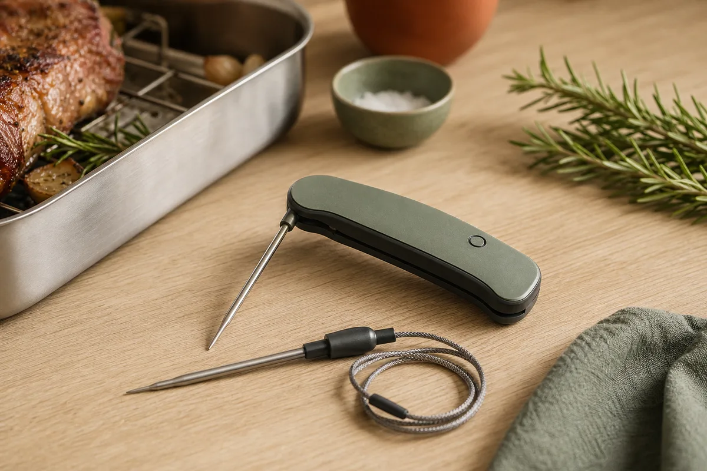

As an Amazon Associate I earn from qualifying purchases. This site contains sponsored product links. Prices and availability are shown on Amazon — check Amazon for current details. Full disclosure
Guide · Thermometers · Season: Holiday cooking
Instant-read or leave-in probe: which one actually does your job?
One thermometer you spot-check with, and one that stays in the food and tells you when to stop. The difference is not luxury — it is what you can walk away from.
By the ShopNow Kitchen Desk · Published 2026-11-20 · Updated 2026-11-20 · 4 min read · This category · Sources

Illustration, not a product photograph. No Amazon product imagery is used on this site (see About → Methodology).
There are two jobs, and one thermometer rarely does both. Instant-read: you stop cooking, open the oven, poke, read, close up. Leave-in: a probe stays in the food while it cooks and tells you when to stop, usually on a phone. Buy the wrong shape and you either stand at the oven door or you overcook by feel.
The shop has one of each, which makes the comparison easy to follow: an instant-read with a claimed ±0.5°F accuracy (ThermoMaven 1 Sec, listing B0DHZTCNR5) and a three-probe WiFi leave-in system (CHEF iQ Sense Gen3, listing B0DZFD6R9Z).
Why the USDA says to own one at all
This is the part worth reading before you compare models. The Food Safety and Inspection Service states that using a food thermometer is the only reliable way to confirm food reached a safe minimum internal temperature — colour and juice clarity are not reliable. Its published minimums:
Source: USDA FSIS Safe Minimum Internal Temperature Chart and FSIS Food Thermometers — checked 2026-11-20. FSIS also advises checking a whole bird in three places (thickest breast, innermost thigh, innermost wing, avoiding bone), and notes that for optimum safety you should not stuff whole poultry; if you do, the centre of the stuffing must also reach 165°F.
Three places means three readings. Who takes them?
This single USDA instruction decides most purchases. An instant-read takes those three readings in about fifteen seconds, and it can take forty more readings across the rest of the year without an app. A leave-in system takes one continuous reading from wherever you put the hub, which is the entire point when the bird is in for three hours.
Three readings on a hot pan, mid-roast, at 6pm — instant-read wins on friction.
Two hours of unattended cooking while you are upstairs — leave-in wins on everything else.
A big holiday meal with a roast, a bird and a casserole — the honest answer is two probes, and that is a legitimate outcome of this comparison, not a sales pitch.
What to check on the listing, in order
Accuracy claim and how it is certified. The ThermoMaven listing states ±0.5°F and NIST & NSF certification. "NIST-traceable" and "NSF-certified" are different statements; if the page does not say which, ask the seller before you rely on it.
Probe count and heat limit. The CHEF iQ Sense listing states 3 ultra-thin probes and probes heat-safe to 1000°F, which is what lets one probe live in a smoking grill or a searing pan.
Does it name air frying? The CHEF iQ listing lists "Air Fryer" among its uses. In a small basket cavity a probe and its cable sit much closer to the fan and element than in an oven — check the cable rating, not just the probe tip.
What happens when the network is gone. The Sense listing states WiFi with "Unlimited Range". That is a marketing phrase: what it means is that the hub reports over your network rather than by Bluetooth distance. Ask your own question — does it still alarm if the router is rebooting, and is there a base-unit display?
Charging and standby. The Sense listing states a rechargeable hub that charges the probes. A dead hub mid-roast is the failure mode; a dead coin cell mid-roast is the same failure mode with a cheaper fix. Pick the failure you prefer.
Waterproofing rating. The ThermoMaven listing states IP67. If you rinse the probe under a tap — and you will — a rating is the difference between a rinse and a replacement.
What this page cannot tell you. No price, no discount and no star rating appears anywhere on this site, and none is quoted here: Amazon's Program Policies bar static price display, and ratings move daily (see FLG-006). Nobody on this desk has cooked with either device, so there is no "we tested it" claim in this sentence or anywhere else. What we can do is list what the listing says and link every row.
The probe you hold and check at the end of the cook. Its listing title claims a one-second reading, ±0.5°F accuracy and IP67 waterproofing — we quote those claims, we have not measured them, and the accuracy claim is the one worth testing at home.
The probe you leave in. Three ultra-thin probes wire to a hub that reports over WiFi, and the listing says the probes are heat-safe to 1000°F — that combination is what lets you walk away and still know when to stop.
Capacity: 3 probes + hub
Size: 8.43 x 4.69 x 1.93 inches (package); 14.07 ounces
You cook mostly quick weeknight protein and you are already standing at the stove → instant-read.
You cook low and slow, or you cook while doing something else → leave-in with at least one probe.
You are cooking a whole bird for more than six people → leave-in for the roast, instant-read for the three-place check before it comes out.
You refuse to install an app → buy a leave-in with a base-unit display, or buy the instant-read and set a timer.
How this page was made. Written from published listings and official guidance, by an editorial desk — not from hands-on use, so no page here claims testing. Every table row links to its source; anything we could not confirm is left blank and listed on Flagged for review. Sponsored links are marked Sponsored.
Get the next comparison — checklist first, hype never.
One email when a new guide publishes.
There is no newsletter running yet, so this control is switched off on purpose: it transmits nothing, stores your address nowhere, and cannot submit a form. A subscription flow needs a provider, a consent record and a retention period first — those are open questions on the questions page, and the disclosure states exactly what this site does and does not collect.